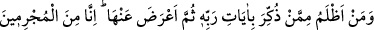
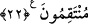

musîbetle mübtelâ kılar. Olur ki onlar Allâh’ın kendilerine belâ ve sıkıntıların azâbını
tattırması sebebiyle gaflet uykusundan uyanırlar. Yardımsız kalmak, hicrân ve kalb
kasveti ile onlara en büyük azâbı tattırmadan önce boş geçen günlerini telâfi ederler.
Nitekim âyette: “Biz onların kalplerini ve gözlerini ters döndürürüz.” (el-En’âm,
6/110) buyrulmuştur. Yine belki onlar taleplerindeki sadâkate, irâdelerindeki genişliğe
ve muhabbetlerindeki fazlalığa geri dönerler.”
22. Kendisine Rabbinin âyetleri hatırlatıldıktan sonra onlardan yüz çevirenden
daha zâlim kim olabilir! Muhakkak ki biz, günahkârlara, lâyık oldukları cezâyı
veririz.
“Kendisine Rabbinin âyetleri hatırlatıldıktan” Kur’ân ile öğüt verildikten “sonra
onlardan yüz çevirenden” onların üzerinde düşünmeyen, onları kabul etmeyen ve
gerekleriyle amelde bulunmayandan “daha zâlim kim olabilir!” Yâni, -her ne kadar
cümlenin terkîbi eşit olanı reddetmeye temas etmeksizin daha zâlim olanı reddetmek
üzerine kurulmuş olsa da- hiçbir zâlim, Allâh’ın âyetlerinden yüz çeviren kimseden
daha zâlim değildir.
“ (sonra)” kelimesi, bu âyetler son derece açık olduğu, iki dünyânın mutluluğuna
irşâd ettiği halde onlardan yüz çevirmeyi uzak ve imkansız görmeyi ifâde etmek içindir.
Tıpkı mescidde namazı terk etmesi sebebiyle bunu imkansız görüp arkadaşına:
“Mescide girdin, sonra da orada namaz kılmadın, öyle mi!” demek gibi.
“Muhakkak ki biz, günahkârlara,” suçu ne kadar hafif olsa da cürüm/günah işlemekle
muttasıf olan herkese “lâyık oldukları cezâyı veririz.” Durum böyle olunca, her
zâlimden daha zâlim ve her günahkardan günahı daha ağır olana hiç cezâ vermez olur
muyuz? Helâk ve azap ile intikam alırız.
Kul, türlü yasaklama ve azarlamalarla uyarılır, muhtelif te’dîb şekilleri ile Hakk’ın
emirlerine muvâfakat sınırlarını terk etmesi konusunda harekete geçirilir, sonra da kötü
fiilinden geri kalmaz, uzun süre selâmette kaldığına aldanır, Allâh’ın mekrinin ve
emrinin gizliliklerinin hücumlarından emin olursa; Allah onu öyle ansızın yakalayıverir
ki onun yakalamasından hiçbir çıkış bulamaz. Nitekim Allah Teâlâ şöyle buyurmuştur:
“Muhakkak ki biz,” günahlarında ısrar eden “günahkârlara,” iki dünyâda da onları
hüsrâna mahkûm etmekle “lâyık oldukları cezâyı veririz.”
Hâfız der ki:
Pusu var ortada, sen ise rahat rahat gidiyorsun; dikkat et.